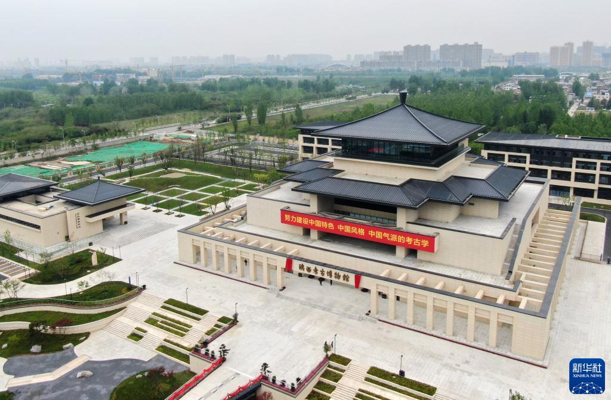
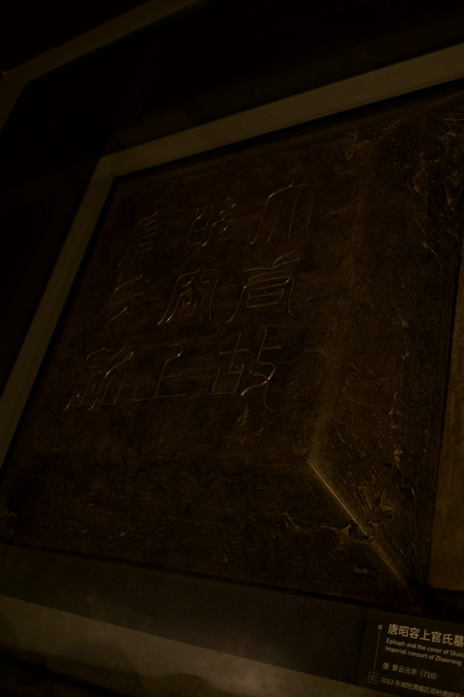
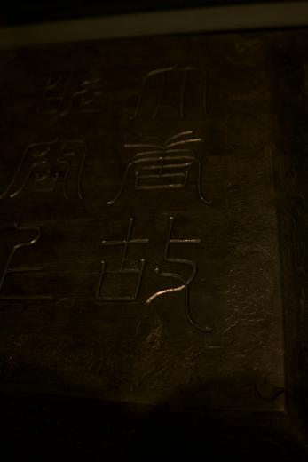

馆舍鸟瞰 / 新华社记者 李一博 摄01 / 主题
考古圣地 华章陕西
陕西考古博物馆
器物在这里回到遗址、墓葬与层位。田野发掘、实验室修复与考古研究沿同一条线索展开，展柜中的遗物因出土关系重新获得可读的历史位置。
从出土位置出发，阅读器物与遗址之间的关系。
02 / 博物馆介绍
中国第一座 考古学科 专题博物馆
陕西考古博物馆依托陕西省考古研究院与陕西近百年的考古积累建立。它把田野调查、考古发掘、文物保护、实验室研究与成果阐释连接起来，使器物重新回到遗址、墓葬和地层关系之中。
常设展以“考古圣地·华章陕西”为主题，依次展开“考古历程”“文化谱系”“考古发现”“文保科技”四章。开馆资料显示，馆内展出文物4218组、5215件，其中90%以上为首次公开展出。
博物馆建筑面积约10700平方米，室内展陈约5800平方米，室外展陈约10000平方米。馆内既呈现陕西考古的重要发现，也展示一件遗物从出土、修复到进入历史解释的完整过程。

唐昭容上官氏墓志盖题刻
03 / 重点文物
唐昭容上官氏墓志 上官婉儿生平的石刻证言
唐昭容上官氏墓于2013年在陕西咸阳发现，墓志使墓主人身份得以确认。志石为青石方志，约74厘米见方、厚约15.5厘米；规整的界格与正书志文，保留了唐代高等级女性墓志的形制特征。
志文共32行，约982字，叙述上官氏的家世、生平、死亡与葬地，并提及太平公主助葬等信息。它补充了传世文献较少触及的个人经历，也为观察唐代宫廷女性的政治处境、丧葬礼仪和记忆书写提供了直接材料。
墓葬本体曾遭严重破坏，墓志却保存了墓主身份与葬事线索。有关人为毁墓或“官方毁墓”的说法属于依据墓葬现象提出的考古解释，目前不宜写成确定结论。
- 时代
- 唐景云元年（710）
- 发现
- 2013年 · 陕西咸阳
- 形制
- 青石方志 · 约74 × 74 × 15.5厘米
- 文字
- 正书32行 · 约982字
- 史料价值
- 世系、生平、死因、葬地与太平公主助葬信息
- 墓葬状态
- 遭到严重破坏，毁墓原因仍属考古解释
04 / 文物目录
从遗址出发 细读每件文物
从史前玉器、商周青铜到汉唐墓志与历代陶瓷，目录按时代、材质和出土地点展开。选择一件文物，可以继续查看形制、工艺、发现背景与研究意义；同一器物的正面、侧面和局部照片合并在一张卡片中。